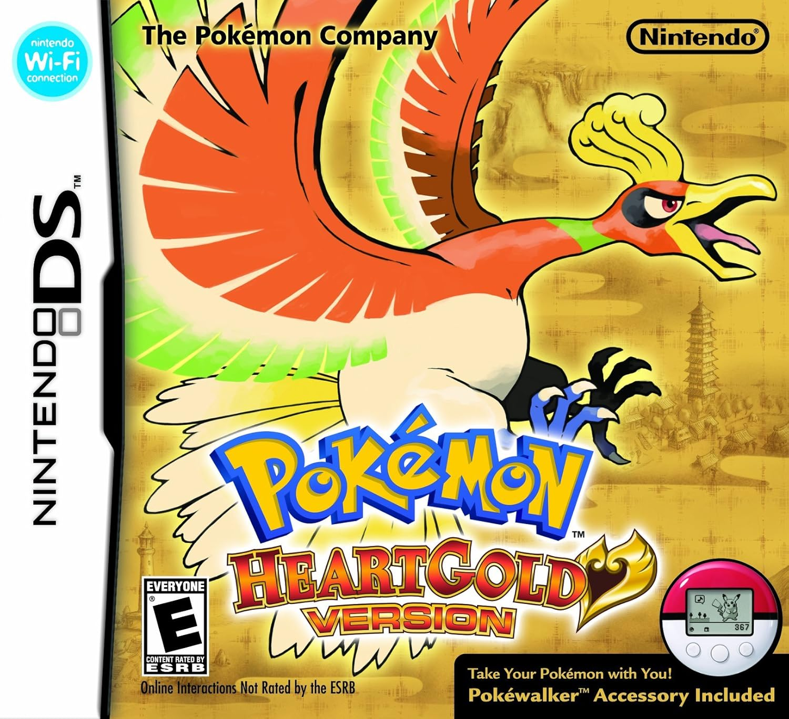

Bueno de este no se puede decir mucho lo jugue de muy pequeño escogiendo al pokemon cyndaquill de inicial y durante mi aventura fue bastante util, el recuerdo principal que tengo de este juego fue cuando antes de la liga pokemon el rival tenia al inicial que era fuerte contra ti en este caso totodile y me acuerdo que no podia ganarle y en lugar de ir a buscar otro pokemon para ganar reininicie todo el juego pero esta vez usando a chikorita
